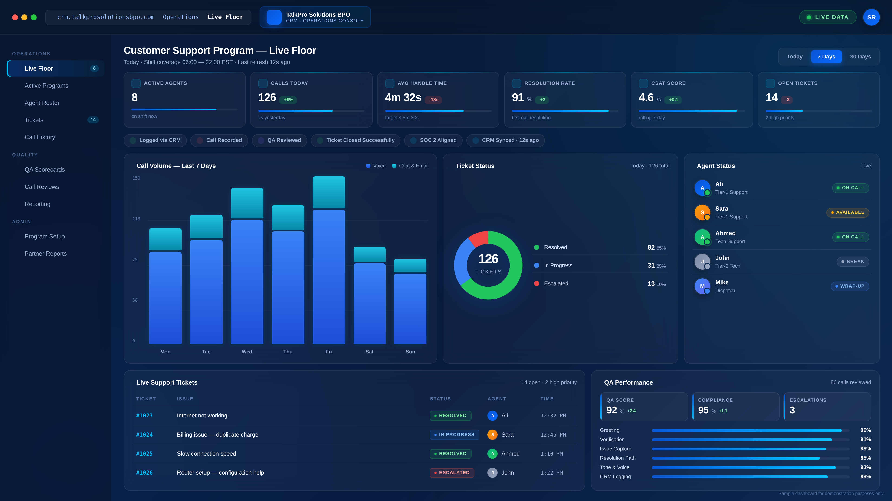

STRUCTURED CUSTOMER SUPPORT AND TECHNICAL SUPPORT OPERATIONS, DELIVERED WITH CONSISTENCY, QUALITY ASSURANCE, AND REAL-TIME SUPERVISION.
SUPPORTING CUSTOMER SUPPORT AND TECHNICAL OPERATIONS FOR NORTH AMERICAN CLIENT PROGRAMS.
OPERATED UNDER STRUCTURED QA, RECORDED LINES, AND PROGRAM-LEVEL SUPERVISION.
TALKPRO SOLUTIONS BPO OPERATES STRUCTURED CONTACT CENTER PROGRAMS SUPPORTING CUSTOMER SUPPORT, TECHNICAL SUPPORT AND DISPATCH OPERATIONS FOR NORTH AMERICAN CLIENTS — DELIVERED WITH TRAINED AGENTS, RECORDED-LINE QA, CRM-TRACKED WORKFLOWS AND ACCOUNTABLE PROGRAM-LEVEL SUPERVISION ON EVERY SHIFT.

REAL-TIME MONITORING & QA
ACTIVE PROGRAM TYPES ACROSS THE FLOOR
THE CUSTOMER-FACING PROGRAMS WE RUN ON THE FLOOR.
WE SUPPORT A RANGE OF CUSTOMER-FACING PROGRAMS — FROM INBOUND CUSTOMER SUPPORT AND TECHNICAL SUPPORT DESKS TO ISP SERVICE ISSUE HANDLING, DISPATCH COORDINATION AND BACK-OFFICE WORK. EACH PROGRAM IS STAFFED BY A DEDICATED AGENT TEAM WITH A TEAM LEAD AND RUNS UNDER A PARTNER-APPROVED QA SCORECARD.
NATIONAL RETAIL CUSTOMER SUPPORT — ORDER, RETURNS, STORE LOCATOR, GIFT CARD
INBOUND VOICE AND CHAT SUPPORT HANDLING ORDER TRACKING, RETURNS, STORE LOCATOR QUERIES, GIFT CARD BALANCES AND TIER-1 PRODUCT QUESTIONS FOR A US NATIONAL RETAILER'S CUSTOMER SERVICE LINE. RECORDED CALLS, POST-CONTACT SURVEY, WEEKLY QA REVIEWS.
TELECOM CARRIER CUSTOMER CARE
PLAN QUESTIONS, ACTIVATIONS, BILLING INQUIRIES, PORT-IN SUPPORT AND COMPLAINT HANDLING FOR WIRELESS CARRIER SUBSCRIBERS.
ISP TIER-1 & TIER-2 TECHNICAL SUPPORT
CONNECTION TROUBLESHOOTING, MODEM/ROUTER RESETS, ACCOUNT CHANGES, SCHEDULED INSTALLS AND FIELD-TECH DISPATCH COORDINATION.
FIELD DISPATCH COORDINATION DESK
INBOUND JOB INTAKE, TECHNICIAN ROUTING, ETA MANAGEMENT, CUSTOMER FOLLOW-UP AND ESCALATION HANDLING FOR SERVICE NETWORKS.
PATIENT APPOINTMENT & INTAKE DESK
INBOUND APPOINTMENT SCHEDULING, CONFIRMATIONS, REMINDERS AND ROUTING FOR CLINICS AND PROVIDER NETWORKS OPERATING ACROSS MULTIPLE LOCATIONS.
HOME SECURITY MONITORING & SUPPORT
CUSTOMER SUPPORT FOR CONNECTED HOME SECURITY SUBSCRIBERS — ACCOUNT CHANGES, SENSOR TROUBLESHOOTING, BILLING AND SERVICE-ADD HANDLING.
UTILITY ACCOUNT & BILLING INBOUND
ACCOUNT INQUIRIES, BILLING QUESTIONS, SERVICE START/STOP COORDINATION AND OUTAGE REPORTING FOR UTILITY PROVIDER CUSTOMER LINES.
ONLINE ORDER SUPPORT DESK
ORDER TRACKING, RETURN AUTHORIZATION, REFUND COORDINATION AND PRODUCT INQUIRY HANDLING ACROSS WEB AND CHAT CHANNELS FOR DTC BRANDS.
CUSTOMER RETENTION & WIN-BACK
RECORDED OUTBOUND RETENTION CALLS TO LAPSED AND AT-RISK SUBSCRIBERS, WITH OFFER PRESENTATION AND STRUCTURED SAVE-FLOW SCRIPTING.
CRM & BACK-OFFICE PROCESSING
TICKET TRIAGE, DATA ENTRY, ORDER PROCESSING, KYC DOCUMENT REVIEW AND CRM HYGIENE WORK RUNNING ALONGSIDE VOICE CAMPAIGNS.
SPECIFIC PARTNER NAMES ARE KEPT CONFIDENTIAL UNDER NDA. PROGRAMS ABOVE REPRESENT ACTIVE CAMPAIGN TYPES — REFERENCES AND CASE DISCUSSION AVAILABLE ON REQUEST.
SEE INDUSTRY SOLUTIONSOPERATING MULTI-PROGRAM CUSTOMER SUPPORT ENGAGEMENTS.
WE OPERATE STRUCTURED CONTACT CENTER PROGRAMS UNDER AN ENTERPRISE DELIVERY MODEL. OUR TEAM, PROCESS AND REPORTING STANDARDS ARE BEING BUILT UP SO WE CAN SUPPORT LARGER CUSTOMER-CARE PROGRAMS AS WE EXPAND — INCLUDING RETAIL CUSTOMER SUPPORT, TECHNICAL SUPPORT AND BROADER CONSUMER SERVICE DESKS.
EXPANDING AGENT CAPACITY
ACTIVE HIRING AND TRAINING PIPELINES FOR CUSTOMER SUPPORT AND TECHNICAL SUPPORT AGENTS — PRODUCT KNOWLEDGE, VOICE QUALITY AND CRM HANDLING HELD TO A CONSISTENT OPERATING STANDARD.
MULTI-SHIFT FLOOR STRUCTURE
SEAT CAPACITY ORGANIZED INTO DEDICATED ZONES PER PROGRAM, WITH SHIFT COVERAGE BUILT AROUND THE OPERATING HOURS EACH PROGRAM NEEDS — NOT POOLED AT RANDOM.
CONSISTENT QA DISCIPLINE
RECORDED CALLS, WEEKLY QA SCORECARDS, CALIBRATION SESSIONS AND PARTNER-APPROVED EVALUATION FRAMEWORKS — THE OPERATING DISCIPLINE A SERIOUS CUSTOMER SUPPORT PROGRAM REQUIRES.
CLEAR PARTNER REPORTING
DAILY AND WEEKLY PERFORMANCE REPORTS, ROOT-CAUSE ANALYSIS ON ESCALATIONS, AND A STRUCTURED REVIEW CADENCE BUILT INTO EVERY PROGRAM FROM DAY ONE.
AN OPERATIONS PARTNER, NOT A VENDOR.
OUR FLOOR IS STRUCTURED AROUND DEDICATED PROGRAM TEAMS, REAL-TIME SUPERVISORS AND WEEKLY PERFORMANCE REVIEWS — BUILT FOR PARTNERS WHO WANT A CONTACT CENTER THAT RUNS LIKE AN ORGANIZED OPERATION, NOT AN AD-HOC DESK.
A STRUCTURED CONTACT CENTER OPERATOR, FOCUSED ON DOING CUSTOMER SUPPORT WELL.
TALKPRO SOLUTIONS BPO — OPERATED BY TALKPRO TECH LLC (USA) — RUNS CUSTOMER SUPPORT, TECHNICAL SUPPORT, ISP SERVICE ISSUE HANDLING, DISPATCH COORDINATION AND BACK-OFFICE PROGRAMS ON BEHALF OF PARTNERS ACROSS NORTH AMERICA.
WE ARE NOT A MARKETING AGENCY OR A LEAD-GENERATION SHOP. WE ARE A CONTACT CENTER OPERATOR: TRAINED AGENTS, SUPERVISORS, QA ANALYSTS AND PROGRAM MANAGERS RUNNING STRUCTURED CUSTOMER SUPPORT CAMPAIGNS UNDER MEASURABLE PERFORMANCE COMMITMENTS — WITH THE KIND OF OPERATING DISCIPLINE PARTNERS ACTUALLY WANT TO SEE WHEN THEY AUDIT A CONTACT DESK.
- DEDICATED PROGRAM TEAMS.EACH ENGAGEMENT IS STAFFED WITH NAMED SUPERVISORS AND A PROGRAM MANAGER — NOT POOLED LABOR.
- AUDITABLE OPERATIONS.RECORDED-LINE WORKFLOWS, QA SCORECARDS, WEEKLY PERFORMANCE REPORTING, AND CALL-LEVEL TRACEABILITY.
- DESIGNED TO SCALE.FLOOR CAPACITY, SUPERVISION DEPTH AND PROCESS CONTROLS ARE SIZED SO WE CAN GROW WITH OUR PARTNERS AS THEIR SUPPORT VOLUME GROWS.

THE DAY-TO-DAY WORK OUR TEAM ACTUALLY DOES.
THE WORK BELOW IS THE PRACTICAL CORE OF WHAT WE RUN ON THE FLOOR. IT IS HOW OUR AGENTS ARE TRAINED, HOW SHIFTS ARE ORGANIZED, AND HOW WE MEASURE WHETHER A PROGRAM IS BEING DELIVERED PROPERLY — NOT ASPIRATIONAL POSITIONING, JUST THE OPERATIONAL GROUND WE COVER.
CUSTOMER SUPPORT
INBOUND VOICE, CHAT AND EMAIL HANDLING FOR EVERYDAY CUSTOMER QUESTIONS — ACCOUNT AND BILLING INQUIRIES, ORDER STATUS, RETURNS, COMPLAINT HANDLING, SERVICE GUIDANCE AND GENERAL ASSISTANCE. LOGGED IN CRM, RECORDED FOR QA, ESCALATED TO TIER-2 WHERE THE ISSUE REQUIRES IT.
TECHNICAL SUPPORT
TIER-1 AND TIER-2 TECHNICAL SUPPORT FOR CONNECTIVITY, DEVICE, ACCOUNT AND SERVICE ISSUES. AGENTS FOLLOW DOCUMENTED TROUBLESHOOTING PATHS, CAPTURE DIAGNOSTIC NOTES IN THE PARTNER CRM, AND ROUTE HARDWARE OR FIELD ISSUES TO THE RIGHT NEXT STEP RATHER THAN DROPPING THEM.
ISP SERVICE ISSUE HANDLING
CONNECTION PROBLEMS, SLOW SPEEDS, MODEM AND ROUTER ISSUES, PLAN AND BILLING QUESTIONS, INSTALL SCHEDULING AND POST-INSTALL VERIFICATION CALLS. AGENTS UNDERSTAND SERVICEABILITY CHECKS, BASIC LINE TROUBLESHOOTING AND WHEN TO DISPATCH A TECHNICIAN VERSUS RESOLVING ON THE CALL.
TROUBLESHOOTING & RESOLUTION
STRUCTURED FIRST-CALL RESOLUTION WORK: IDENTIFYING THE ACTUAL ISSUE, WORKING THROUGH THE DOCUMENTED FIX SEQUENCE, CONFIRMING THE CUSTOMER IS BACK TO A WORKING STATE, AND CAPTURING ROOT-CAUSE NOTES SO RECURRING ISSUES FEED BACK INTO PRODUCT OR PARTNER REPORTING.
THREE REASONS PARTNERS CHOOSE TALKPRO.
THREE OPERATING PRINCIPLES DEFINE THE DECISION WHEN ENTERPRISE PARTNERS ENGAGE TALKPRO FOR A CUSTOMER SUPPORT OR TECHNICAL SUPPORT PROGRAM.
STRUCTURED OPERATIONS
EVERY PROGRAM RUNS TO A WRITTEN OPERATING MODEL — DEFINED SHIFT COVERAGE, ESCALATION PATHS, QA SCORECARDS AND A REGULAR REVIEW CADENCE. NOTHING IS RUN ON IMPROVISATION, AND NOTHING IMPORTANT HAPPENS OFF-THE-RECORD.
TRAINED AGENTS
AGENTS GO THROUGH STRUCTURED PRODUCT, VOICE AND CRM TRAINING BEFORE GOING LIVE, AND STAY IN CONTINUOUS COACHING CYCLES AFTER. WE HIRE FOR RETENTION, NOT FOR HEADCOUNT, BECAUSE TRAINED AGENTS ARE WHAT MAKES SERVICE DELIVERY CONSISTENT.
SCALABLE TEAM
OUR TEAM AND FLOOR ARE ORGANIZED TO GROW PROGRAM BY PROGRAM — NEW SEATS, NEW SHIFTS AND NEW PROGRAM ZONES ADDED ON A CLEAR RAMP PLAN. AS PARTNER VOLUME GROWS, CAPACITY SCALES WITHOUT LOSING THE OPERATING DISCIPLINE.
FROM CUSTOMER CONTACT TO PARTNER REPORTING.
THIS IS THE SIMPLE OPERATING SEQUENCE EVERY CUSTOMER INTERACTION FOLLOWS ON OUR FLOOR. EACH STAGE IS OWNED, LOGGED AND VISIBLE — NOTHING SKIPS AHEAD, NOTHING GETS LOST.
CUSTOMER ISSUE
INBOUND CONTACT REACHES THE PROGRAM DESK VIA VOICE, CHAT OR EMAIL.
AGENT HANDLING
A TRAINED AGENT PICKS UP, IDENTIFIES THE CUSTOMER AND CAPTURES THE ISSUE IN CRM.
TROUBLESHOOTING
THE AGENT WORKS THROUGH THE DOCUMENTED FIX SEQUENCE OR ROUTES TO TIER-2.
RESOLUTION
ISSUE IS CLOSED WITH THE CUSTOMER, OR SCHEDULED FOR FOLLOW-UP IF IT CANNOT RESOLVE IN-CALL.
REPORTING
LOGGED IN CRM, FED INTO DAILY / WEEKLY PARTNER REPORTS WITH QA REVIEW.
HOW WE MONITOR A LIVE CUSTOMER SUPPORT PROGRAM.
THIS IS A SAMPLE OF THE OPERATIONAL VIEW OUR SUPERVISORS AND PROGRAM MANAGERS WORK FROM — KPIS, AGENT STATUS, TICKET QUEUE AND QA SCORING. THE SAME DASHBOARD LAYOUT IS BUILT FOR EVERY PARTNER PROGRAM, WITH METRICS TUNED TO WHAT THEY CARE ABOUT.

SAMPLE DASHBOARD FOR DEMONSTRATION PURPOSES ONLYLIVE OPERATIONS DATA SIMULATION FOR DEMONSTRATION PURPOSES ONLY.
A SNAPSHOT OF THE SUPPORT TICKETS OUR FLOOR HANDLES DAILY.
EACH TICKET IS LOGGED IN CRM, ASSIGNED TO A NAMED AGENT AND TRACKED THROUGH TO RESOLUTION UNDER RECORDED-LINE DISCIPLINE.
INTERNET NOT WORKING
CUSTOMER REPORTED TOTAL CONNECTIVITY LOSS. LINE CHECK COMPLETED, MODEM RESET AND SERVICE RESTORED ON FIRST CALL.
BILLING ISSUE — DUPLICATE CHARGE
CUSTOMER FLAGGED DUPLICATE CHARGE ON MONTHLY STATEMENT. REFUND PENDING VERIFICATION WITH BILLING TEAM. CUSTOMER NOTIFIED.
SLOW CONNECTION SPEED
SPEED TEST BELOW PLAN THRESHOLD. MODEM RESET PERFORMED, LINE METRICS RECOVERED. CUSTOMER CONFIRMED RESTORED SPEED.
ROUTER SETUP — CONFIGURATION HELP
CUSTOMER UNABLE TO COMPLETE ROUTER CONFIGURATION VIA STANDARD GUIDE. ROUTED TO TIER-2 WITH FULL DIAGNOSTIC NOTES ATTACHED.
EVERY PROGRAM RUNS UNDER A DOCUMENTED CONTROL MODEL.
FIVE OPERATING LAYERS GOVERN HOW ENTERPRISE CONTACT CENTER PROGRAMS ARE RUN ON OUR FLOOR — APPLIED CONSISTENTLY TO EVERY CAMPAIGN, REGARDLESS OF SCALE OR VERTICAL.
LIVE FLOOR SUPERVISION
NAMED TEAM LEADERS ON SHIFT MONITORING AGENT ACTIVITY IN REAL TIME. IMMEDIATE INTERVENTION ON QUEUE PRESSURE, ABNORMAL CALL HANDLING OR SLA RISK.
REAL-TIME QA MONITORING
INDEPENDENT QA ANALYSTS REVIEWING SAMPLED CALLS AGAINST A CALIBRATED RUBRIC. SCORING FED BACK TO COACHING CYCLES WEEKLY.
RECORDED-LINE INTERACTIONS
EVERY VOICE INTERACTION CAPTURED FOR QA REVIEW, COMPLIANCE AUDIT AND DISPUTE RESOLUTION. RETENTION HANDLED UNDER PARTNER NDA FRAMEWORK.
CRM-TRACKED OPERATIONS
EVERY CONTACT LOGGED IN THE PARTNER CRM WITH NOTES, DISPOSITION CODING AND CALL TRACEABILITY. AUDIT-READY DATA SURFACE AT ANY TIME.
STRUCTURED ESCALATION MANAGEMENT
DOCUMENTED ESCALATION MATRIX FROM TIER-1 THROUGH PROGRAM MANAGEMENT TO PARTNER LEADERSHIP. NO AD-HOC ROUTING — EVERY ESCALATION TRACEABLE.
EACH PROGRAM SITS INSIDE A LAYERED OPERATING TEAM.
STRUCTURED TEAM WITH CLEAR RESPONSIBILITIES AND SUPERVISION ACROSS ALL OPERATIONS. PROGRAMS ARE NOT RUN BY POOLED LABOR — EVERY CAMPAIGN IS STAFFED WITH A DEFINED OPERATING STRUCTURE FROM FRONT-LINE AGENTS THROUGH TO AN ACCOUNTABLE OPERATIONS MANAGER.
CUSTOMER SUPPORT AGENTS
TRAINED ON PARTNER PRODUCT, VOICE, CRM AND ESCALATION FLOWS. HANDLE INBOUND VOICE, CHAT AND EMAIL CUSTOMER CONTACTS UNDER RECORDED-LINE DISCIPLINE.
TECHNICAL SUPPORT AGENTS
TIER-1 AND TIER-2 TROUBLESHOOTING SPECIALISTS. DOCUMENTED FIX SEQUENCES, DIAGNOSTIC NOTES CAPTURED IN CRM, STRUCTURED ROUTING FOR HARDWARE AND FIELD ISSUES.
TEAM LEADERS
REAL-TIME SHIFT SUPERVISION. MONITOR LIVE FLOOR ACTIVITY, SUPPORT AGENTS ON CALLS, MANAGE BREAKS AND SHIFT COVERAGE, ESCALATE TO THE OPERATIONS MANAGER.
QUALITY ASSURANCE ANALYSTS
INDEPENDENT OF OPERATIONS. SCORE RECORDED CALLS AGAINST THE PROGRAM QA RUBRIC, RUN WEEKLY CALIBRATION SESSIONS, FEED COACHING INSIGHTS BACK TO FLOOR LEADERSHIP.
OPERATIONS MANAGER
ONE NAMED OWNER PER PROGRAM. OWNS SLAS, WEEKLY BUSINESS REVIEWS, PARTNER REPORTING AND THE OPERATING RELATIONSHIP END-TO-END.
HOW A REAL SUPPORT CONTACT MOVES THROUGH OUR FLOOR.
A SHORT WORKED EXAMPLE OF AN INBOUND TECHNICAL SUPPORT CONTACT — THE STRUCTURED PATTERN EVERY CUSTOMER INTERACTION FOLLOWS ON OUR FLOOR, FROM ISSUE INTAKE THROUGH TO RESOLUTION AND REPORTING.
THIS IS A SAMPLE INTERACTION FOR DEMONSTRATION PURPOSES ONLY.
SIX OPERATIONAL PROGRAMS, ONE ACCOUNTABLE PARTNER.
CUSTOMER SUPPORT DESK
INBOUND VOICE, CHAT AND EMAIL SUPPORT — ACCOUNT ASSISTANCE, BILLING INQUIRIES, COMPLAINT HANDLING AND TIER-1 / TIER-2 ESCALATION FOR CUSTOMER SERVICE PROGRAMS.
EXPLORE PROGRAMRETAIL & E-COMMERCE CARE
ORDER TRACKING, RETURNS AND EXCHANGES, GIFT CARD AND STORE LOCATOR SUPPORT, PRODUCT INQUIRIES AND CUSTOMER SERVICE LINE OPERATIONS FOR RETAIL AND E-COMMERCE BRANDS.
EXPLORE PROGRAMDISPATCH & COORDINATION
FIELD-SERVICE DISPATCH, TECHNICIAN ROUTING, CUSTOMER SCHEDULING, SERVICE-WINDOW CONFIRMATION AND LIVE COORDINATION BETWEEN CUSTOMERS AND ON-GROUND TEAMS.
EXPLORE PROGRAMTELECOM & ISP OPERATIONS
CARRIER CUSTOMER CARE AND ISP SUPPORT: PLAN QUESTIONS, BILLING, ACTIVATIONS, ADDRESS QUALIFICATION, TIER-1/TIER-2 TECHNICAL SUPPORT AND INSTALL COORDINATION.
EXPLORE PROGRAMOUTBOUND & RETENTION
WIN-BACK OUTREACH, FOLLOW-UP CALLS, APPOINTMENT CONFIRMATION, CUSTOMER VERIFICATION, RETENTION CONVERSATIONS AND STRUCTURED CADENCE CAMPAIGNS.
EXPLORE PROGRAMBACK-OFFICE & QA
ORDER ENTRY, CRM HYGIENE, TICKET TRIAGE, PLUS INDEPENDENT QA MONITORING, SCORECARD CALIBRATION, AGENT COACHING AND WEEKLY PERFORMANCE REVIEWS AGAINST PARTNER KPIS.
EXPLORE PROGRAMFOUR PILLARS THAT HOLD EVERY PROGRAM TOGETHER.
EVERY CAMPAIGN WE RUN SITS ON THE SAME OPERATING SYSTEM — THE PART OF OUR BUSINESS THAT KEEPS QUALITY PREDICTABLE AS WE SCALE.
TRAINED PEOPLE
STRUCTURED ONBOARDING, PRODUCT CERTIFICATION, ACCENT & COMMUNICATION TRAINING, AND CONTINUOUS COACHING CYCLES FOR EVERY AGENT ON THE FLOOR.
DEFINED PROCESS
DOCUMENTED CALL FLOWS, SCRIPTS, ESCALATION PATHS AND DISPOSITION MATRICES — BUILT PER PROGRAM, REVIEWED QUARTERLY WITH THE PARTNER.
INDEPENDENT QA
A QA FUNCTION THAT DOES NOT REPORT TO OPERATIONS — CALIBRATED AGAINST PARTNER SCORECARDS, WITH SAMPLE SIZES THAT HOLD UP TO AUDIT.
REPORTING & REVIEWS
DAILY PERFORMANCE DASHBOARDS, WEEKLY BUSINESS REVIEWS, AND MONTHLY PARTNER REVIEWS WITH NAMED PROGRAM OWNERS ON BOTH SIDES.
VERTICALS WHERE OUR FLOOR DELIVERS MEASURABLE OUTCOMES.
OUR AGENTS ARE TRAINED ON THE OPERATING CONTEXT OF EACH INDUSTRY — NOT JUST ON GENERIC CALL HANDLING.
TELECOM & WIRELESS
CARRIER CUSTOMER SUPPORT, PLAN CHANGES, BILLING ASSISTANCE, TECHNICAL TIER-1 TROUBLESHOOTING, AND RETENTION DESKS.
INTERNET SERVICE PROVIDERS
ISP SALES PROGRAMS, ADDRESS QUALIFICATION, RECORDED-LINE ORDERS, INSTALL COORDINATION, AND CUSTOMER ONBOARDING.
DISPATCH & FIELD SERVICE
FIELD TECHNICIAN DISPATCH, SERVICE WINDOWS, ETA CONFIRMATIONS, ROUTE ASSISTANCE AND CUSTOMER-FACING COORDINATION.
ENERGY & UTILITIES
CUSTOMER ENROLLMENT DESKS, ACCOUNT VERIFICATION, SERVICE INQUIRIES, AND RECORDED ENROLLMENT WHERE REQUIRED.
HOME SERVICES
INBOUND BOOKINGS, APPOINTMENT SETTING, FOLLOW-UP CONFIRMATION, AND BACK-OFFICE SCHEDULING FOR SERVICE BUSINESSES.
CUSTOMER SUPPORT PROGRAMS
OUTSOURCED HELP DESKS, CUSTOMER EXPERIENCE TEAMS, AND OVERFLOW HANDLING FOR LARGE-VOLUME SUPPORT OPERATIONS.
WE NEEDED A CONTACT CENTER PARTNER THAT COULD RUN OUR PROGRAM WITH THE SAME OPERATIONAL RIGOR OUR INTERNAL TEAMS EXPECTED — NOT A VENDOR THAT JUST ANSWERED CALLS. TALKPRO STOOD UP OUR DESK IN WEEKS, NOT QUARTERS.

THE INFRASTRUCTURE BEHIND EVERY PROGRAM.
READY TO BRIEF OUR OPERATIONS TEAM ON YOUR PROGRAM?
SEND US YOUR CAMPAIGN REQUIREMENTS — VOLUMES, HOURS OF OPERATION, KPIS, AND COMPLIANCE NEEDS. WE WILL RESPOND WITH A STRUCTURED STAFFING, RAMP AND REPORTING PLAN WITHIN 48 HOURS.